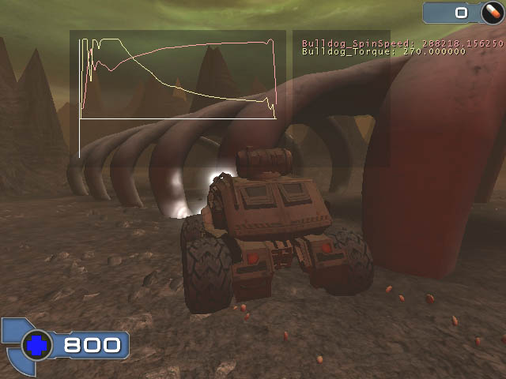

UDN
Search public documentation:
VehiclesInUT2003
Interested in the Unreal Engine?
Visit the Unreal Technology site.
Looking for jobs and company info?
Check out the Epic games site.
Questions about support via UDN?
Contact the UDN Staff
Vehicles in UT2003
Document summary: Introduction and short reference to the obsolete KVehicle system. Document changelog: Last updated by Michiel Hendriks, SVehicle notice. Created by James 'BigSquid' Golding, 8th November 2002. This page is less of a tutorial and more of a collection of information that might be helpful if you are working with the karma vehicle code in UT2003.SVehicle notice
The vehicles from UT2003, also known as KVehicle, has been rendered obsolete by the more advanced SVehicle which is used for the vehicles in UT2004.Classes
A quick outline of the function of major classes involved in the vehicle code:KVehicle
Native class. This is the base class for all Karma-based vehicles, and derives from Pawn. It provides the low level code for getting in and out of the vehicle, as well as the generic control input viaSteering and Throttle. Also provides basic camera functionality.
KVehicleFactory
The cleanest way to add vehicles to a map is to use a 'Vehicle Factory' subclass. When triggered, it spawns a new vehicle at the factories location and orientation. You can spawn particles effects etc to make it look nicer.KCar
Base class for 4-wheeled vehicles. PostNetBeginPlay function spawns all the wheels and joints etc. at the correct places and connects everything together. ProcessCarInput takes the generic KVehicleSteering and Throttle input and turns that into gear (forward or reverse), brakes etc. Tick function passes that information down to the tires and motors.
Also contains code to pack the state of the vehicle into a struct which is sent over the network, and code to unpack it and update the physics when received.
Note that KCar assumes a vehicle pointing along -X, and with +Z being up.
KTire
Native class. Base class of tires for KCar's. Using this class indicates to the engine to do 'tire model' calculations for contacts between this actor and the ground.Bulldog
Example vehicle. Just does things specific to this particular vehicle, eg. specific wheel position, chassis mass, triggers for getting in, weapons etc. Also spawns effects such as headlight coronas, wheel dust and headlight projectors.Tuning KCar's
Here is an overview of the various parameters in KCar. In many cases these will be passed on to the tires or they car wheel joints where they are actually used.| WheelFrontAlong | Distance forwards of the chassis origin front wheels will be attached. |
| WheelFrontAcross | Dsitance to the side (+\-) of the chassis origin front wheels will be attached. |
| WheelRearAlong | Distance back of the chassis origin rear wheels will be attached. |
| WheelRearAcross | Distance to the side (+\-) of the chassis origin rear wheel will be attached. |
| WheelVert | Vertical distance wheel will be attached. This represents the 'zero' point for the suspension. |
| MaxSteerAngle | Maximum (+/-) angle wheels will go to when steering. |
| MaxBrakeTorque | Maximum torque brakes can apply (each wheel) |
| TorqueSplit | How engine torque is split between front and rear wheels. |
| SteerPropGap | Steering works in the same way as a 'controlled' KHinge. See KarmaReference. |
| SteerTorque | See above. |
| SteerSpeed | See above. |
| SuspStiffness | Stiffness of suspension springs |
| SuspDamping | Damping of suspension |
| SuspHighLimit | Top stop of suspension, relative to suspension center. Note - this is in Karma scale, which is 1/50th of Unreal scale. |
| SuspLowLimit | Bottom stop of suspension, relative to suspension center. Also in Karma scale. |
| SuspRef | Offset of spring center from suspension center. Karma scale. |
| See below for explanation of tire parameters. | |
| TireMass | Physics mass of the tires. |
| HandbrakeThresh | Speed above which 'handbrake' comes on when turning. Basically this decreases rear wheel grip when braking and turning at speed. |
| TireHandbrakeSlip | Amount to subtract from rear lateral slip when handbrake is engaged. |
| TireHandbrakeFriction | Amount to subtract from rear lateral friction when handbrake is engaged. |
| ChassisMass | Physics mass that will be set for the chassis. |
| StopThreshold | Threshold velocity under which car is considered 'not moving' |
| TorqueCurve | Relationship between engine RPM, and output torque. |
Tire Model
The tire model splits forces into two direction. The 'Roll' direction is in the direction of roll of the tire, ie. at right angles to the wheel axle. The 'Lateral' direction is at right angles to that, pointing out the side of the tire. TireRollFriction and TireLateralFriction control the amount of friction the tire provides. Tire slip in each direction is calculated as follows:Slip = MIN(RollSlip, MinSlip + (SpinSpeed * SlipRate));Where
SpinSpeed is the rotation of wheel about drive axis in radians per sec. So LateralSlip is the maximum slip, and MinSlip and SlipRate affect how fast you ge there.
Its useful to know the difference between slip and friction. Friction is the ratio between normal force at the tyre-ground contact, and grip it can provide. Its a distinct boundary - the car will grip up to a point and then will start to slide. Slip is the relationship between force and velocity at the tyre - kind of a viscous force. Increasing slip makes the wheels feel generally more slidy.
TireAdhesion makes the tires actually 'sticky', which can be useful. TireRestitution is how bouncy the tires are. TireSoftness allows the tire some springy penetration with ground.
Tuning Hints
If you run the game in a window, then type at the console 'editactor class=bulldog', it should pop up a big properties dialog like in the editor that will let you tweak most parameters while driving around. You can't change some things like centre-of-mass offset though.Try typing 'graph show' at the console with a vehicle in the level, and you should see a scrolling line-graph pop up. The data on the graph is from the GraphData function - see line 681 of KCar.uc.
There also some console commands that enable debug drawing that may be useful: Oh - do you know about the 'kdraw' console commands?| kdraw collision | Show collision used by karma (spheres for wheels, sphyls making up ragdolls etc). |
| kdraw com | Show centre of mass as purple star. |
| kdraw triangles | Show triangles (with normals) currently considered by karma collision. |
| kdraw joints | Show joints with limits. |
| kdraw contacts | Show karma contact position and penetration. Also shows roll and lateral directions. |